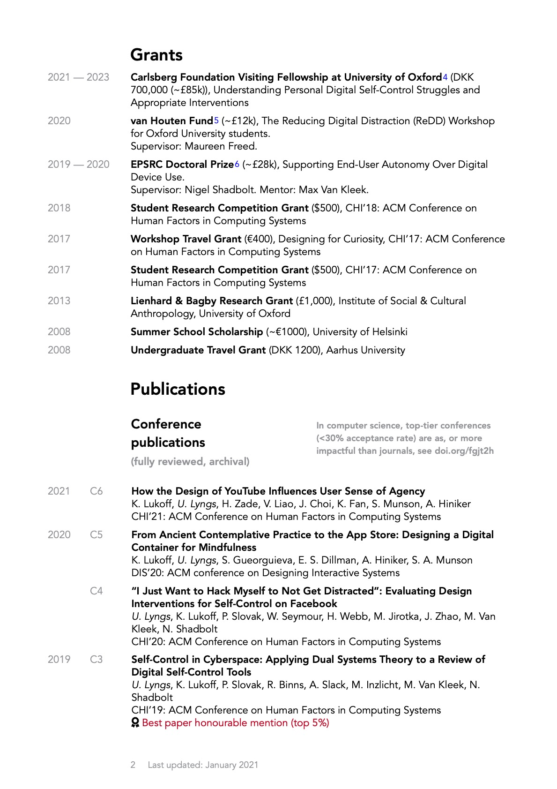

pagedown-cv
Welcome to pagedown-cv
This repository different examples of building a cv with rmarkdown and pagedown, illustrated with my personal resumé.
(NOTE: for now 1-3 only works properly in Chrome, as some aspects of CSS Paged Media are only supported by this browser):
- Paged, academic resume (one-column-paged-academic.Rmd)
- Paged, 2-column brief resume (two-column-paged-brief.Rmd)
- Paged, 1-column resume (one-column-paged.Rmd)
- Ordinary scrolling HTML resume (one-column.Rmd)
- Ordinary scrolling HTML resume, formatted in the style of an old version of my personal website (website-cv.Rmd)
- (For an in-practice example of the website cv, see the current version on my website)
But why?
I liked the idea of making a CV easier to maintain by separating the content from the output (see e.g. Nick Strayer’s data-driven cv).
The brilliant pagedown package makes it possible to output an R Markdown file to paged HTML content which can then be saved as PDF. This means we can easily use R Markdown to programmatically pull out content from some spreadsheet with our CV data, output it to a paged format, and do the styling with CSS. Brilliant!
However, I didn’t find he base format for resumés provided by pagedown (pagedown::html_resume) particularly aesthetically pleasing, so I developed my own paged formats.
Which do you use?
My currently favoured format for academic purposes (example 1) was inspired by, amongst others, the resumé of Matthew Kay:

The two-column resume layout I mainly use for brief, 2-page resumés. I originally made this layout in Microsoft Word (!). After I became enamoured with R Markdown, I at some point set out to recreate this with pagedown (example 2):


How does it work?
Each resumé is generated by an R Markdown file and pulls in its content from _content/cv_entries.csv and _content/publications.csv.
The CSV files with the content are just local copies of the corresponding tabs in this google sheet, which holds most of the content for my website.
The R script _content/sync_w_gsheets.R grabs the current content of the ‘cv_entries’ and the ‘publications’ tabs in the google sheet and stores it in the _content folder.
How can I use it?
To use this for your own CV, download or clone the GitHub repo: https://github.com/ulyngs/pagedown-cv/
Then replace the content in the CSV files with your own stuff and tweak the .Rmd files accordingly.